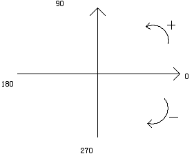

oUnit类的成员函数，设置图片的旋转角度。
void SetRotateAngle(int iAngle);
参数 iAngle ——图片的旋转角度的度数，最小分度为1°
——图片的默认旋转度数为0度，当取正值时图片会被逆时针旋转指定角度，当取负值时图片会被顺时针旋转指定度数

继承oUnit的类如果希望自己也可以被应用oRotateAnimation的话，就得按需要重写这个函数以支持自己的旋转功能